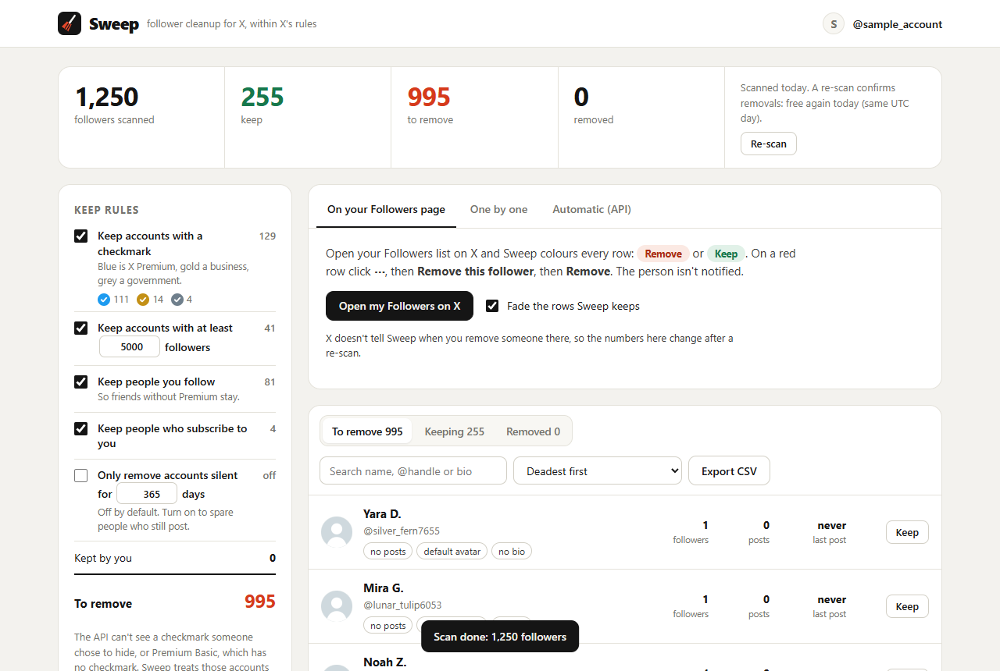
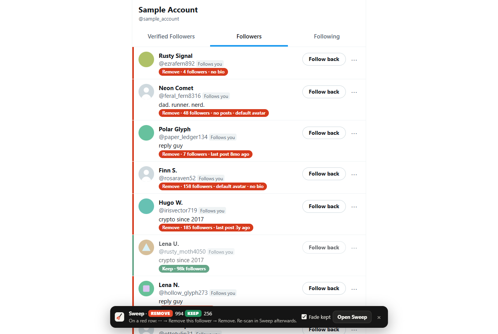
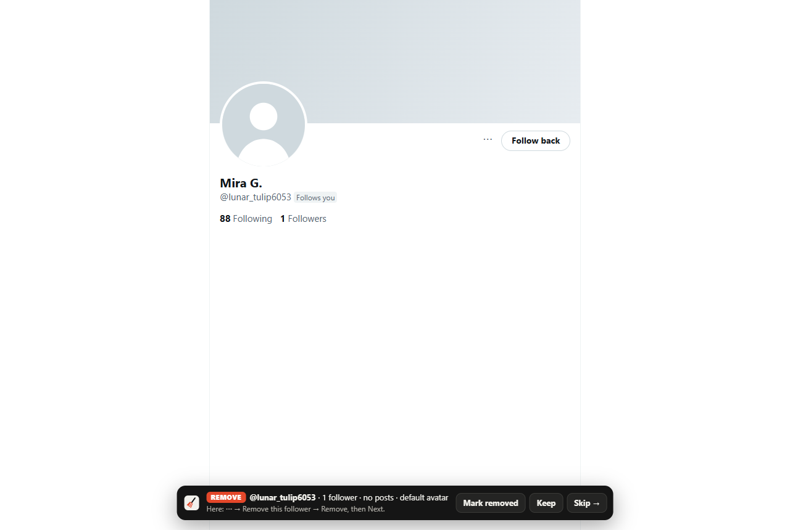

Sweep finds the bots and ghosts among your followers and marks them on your Followers page, without breaking X's rules.
Works in Chrome, Edge, Brave and Arc · about $1 per 1,000 followers, paid to X directly

Scan once, review in seconds, then remove with X's own menu.


Tools that click on x.com for you risk permanent suspension. Sweep never does.
| X's rules | Sweep | |
|---|---|---|
| Reading your followers | Allowed through the API | Official endpoint |
| Bots clicking on x.com | Banned, permanent suspension | Never |
| The "Remove follower" click | No API for it | Yours, in X's own menu |
sweep-extension.zip from the latest release and unzip it.chrome://extensions, turn on Developer mode, click Load unpacked and pick the folder.https://ojfmjajpdhdpjekhnlmjpphmmmngochn.chromiumapp.org/x.Full guide and troubleshooting in the README.
A star helps other people find it, and a follow gets you the next tools.